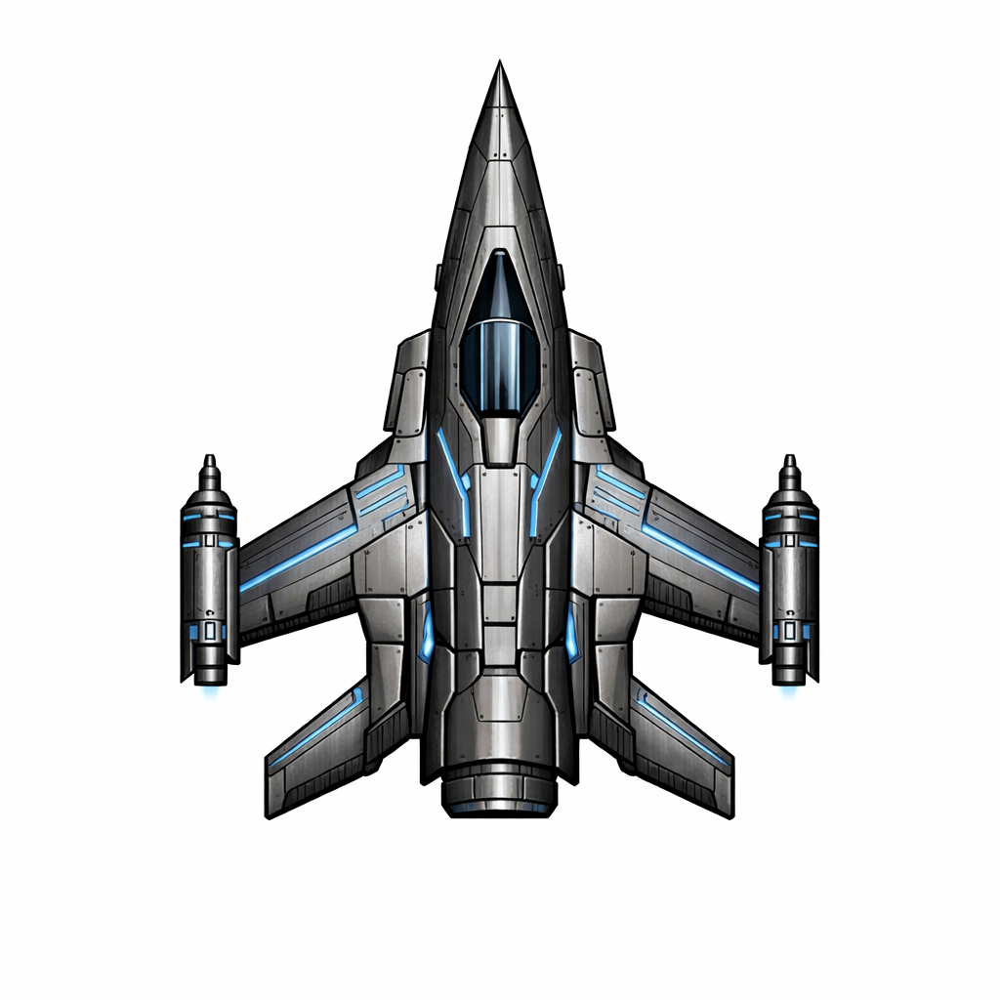
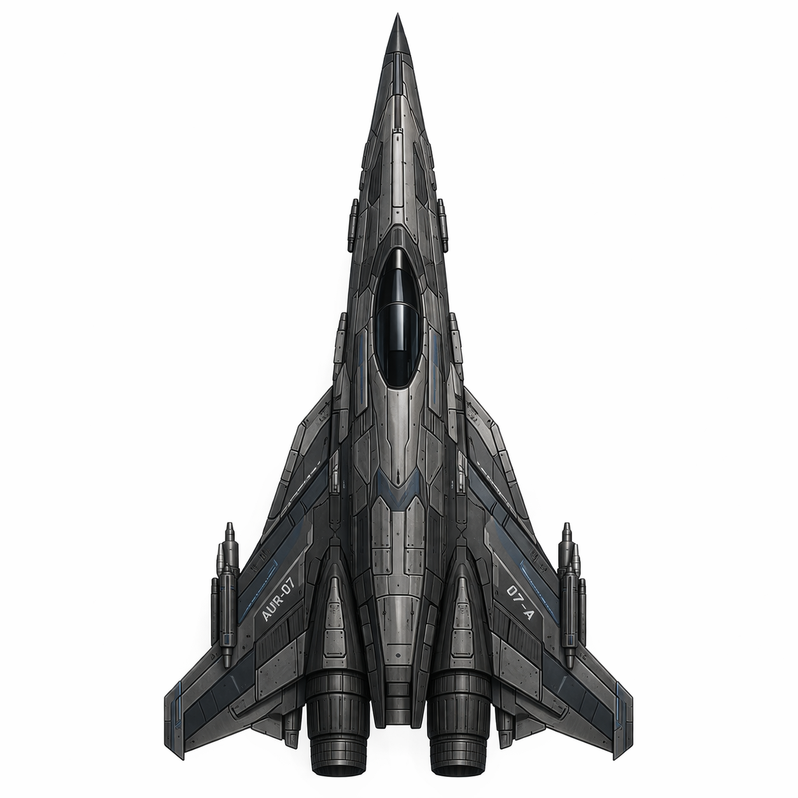
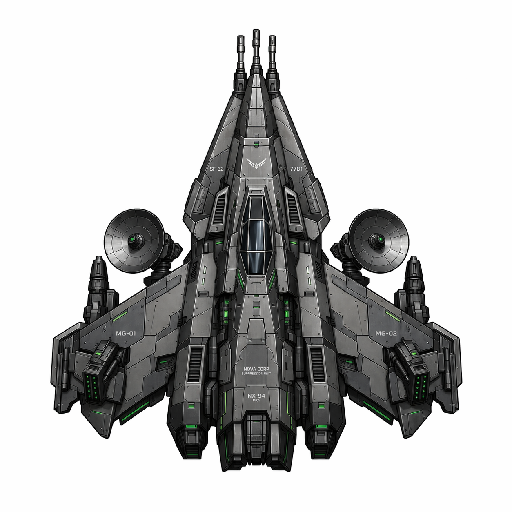
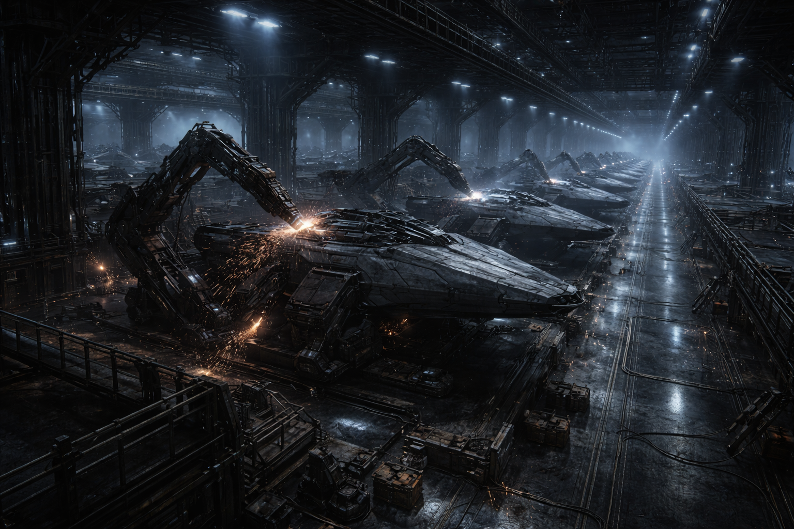
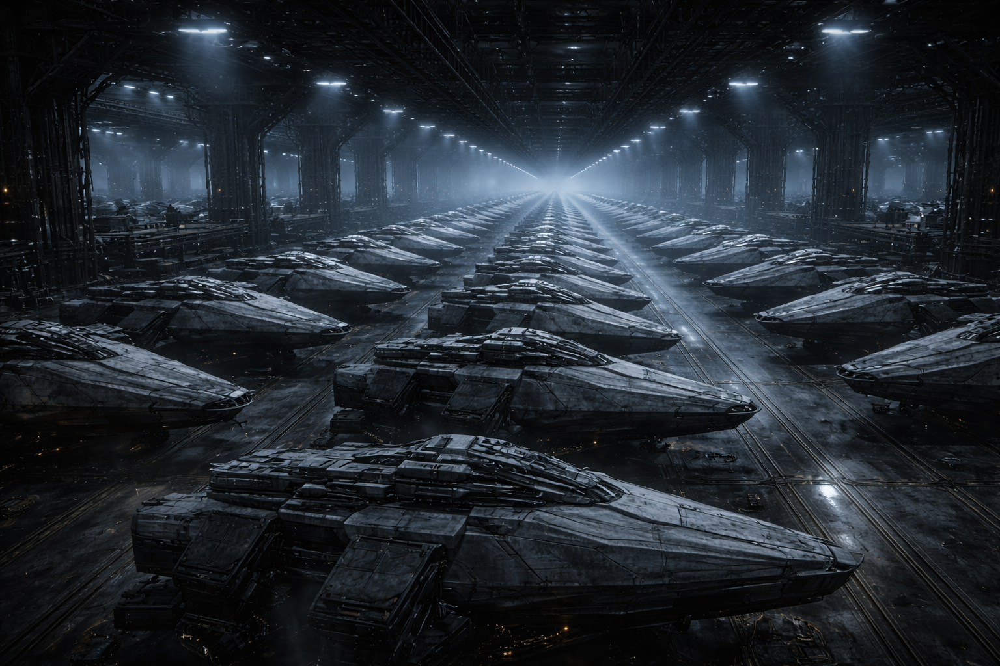
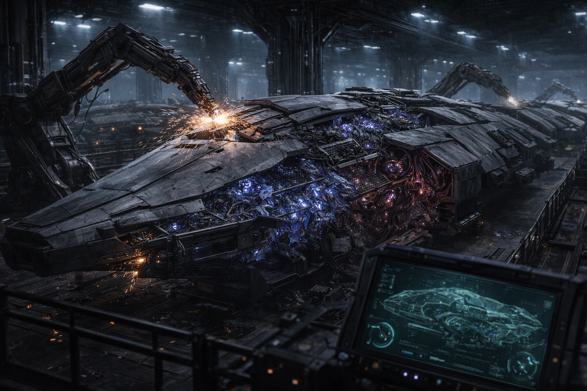
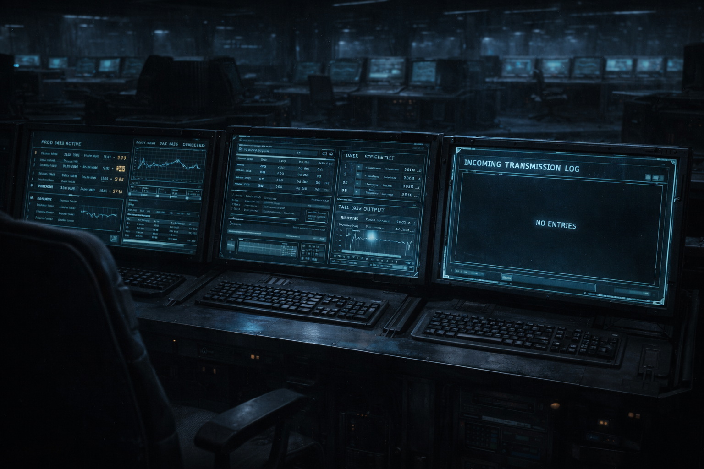

THE FOUNDRY
More ships than the other four combined. Most still fly. Some are still being built.
Volume solves everything.
The Foundry built ships the way a factory builds trucks. Specifications, tolerances, serial numbers. Angular hulls designed for maintenance, not aesthetics. Every plate swaps out. Every system has a manual. A Viper that rolls off the line on one side of Rift space is identical to a Viper built on the other side, down to the bolt pattern.
Their military doctrine had one idea: more. More ships, faster, with parts that interchange. If a pilot dies, the ship gets a new pilot. If a ship dies, the pilot gets a new ship. The Foundry didn't build for excellence. They built for replacement.
It worked. The Foundry fielded more combat vessels than the other four factions combined. When the Collapse came, the ships outlasted the civilization that built them.
Serial number format: [Complex]-[Line]-[Unit]. The highest recovered serial is KV-7-4,891,203. Complex KV had seven assembly lines.
Three templates. One philosophy.
Every Foundry ship follows the same engineering principles: modular construction, standardized weapon mounts, documented maintenance procedures. The differences are role-specific. The Viper is fast and numerous. The Comet is faster and rarer. The Hydra carries three barrels because the Foundry's answer to "what if one gun isn't enough" was always "add more guns."



Every Foundry ship comes with a service manual. The Viper manual is 340 pages. The Hydra manual is 340 pages. The Comet manual is 340 pages. Same manual. Same page count. They standardized the documentation too.
Foundry pilots don't name their ships. The serial number is the name. Sentimentality is a maintenance hazard.
The lines never stopped.
Fourteen Foundry assembly complexes have been located in charted Rift space. Nine are dormant — power depleted, lines frozen mid-operation, half-finished hulls still clamped in place. Five are active. Their reactors are self-sustaining. Their raw material hoppers are fed by automated mining systems that were never shut down. The assembly lines produce ships, move them to the output hangar, and start the next one.
The output hangars are full. At Complex KV, the queue extends through three overflow bays. The oldest ships in the queue have been sitting for an estimated 200 years. The newest rolled off the line last week. The Compact scraps them for parts when the hangars reach capacity. The lines don't notice.


We scrapped forty Vipers last quarter to clear space. The line built forty-one in the same period. We are losing this negotiation.
Line 7 built something else.
On day 4,217 of continuous monitoring, Assembly Complex TH, Line 7, deviated from its production template. The line had been producing Hydra-class hulls on a 12-day cycle for as long as the Compact had been watching it. On day 4,217, it started building something that wasn't a Hydra.
The hull geometry was Foundry. Angular, modular, bolt patterns consistent with standard manufacturing. But sections of the frame used materials the assembly line shouldn't have had access to. Compact metallurgists identified crystalline mineral-bonded plating in the wing structures — Lattice technology. Sections of the interior conduit showed organic growth patterns consistent with Choir bio-membrane.
The serial number on the hull continued sequentially from the last Hydra produced. As if the line considered this the next unit in the same production run.

The Compact's engineering team pulled the production logs. The template change occurred at 03:41:07, local time. No manual input. No firmware update. No maintenance window. The line received a new set of manufacturing instructions and began executing them.
The communications log for Complex TH was reviewed. No incoming transmissions. No data uplinks. No physical access to the facility in the preceding 90 days. The production order came from somewhere. The logs say it came from nowhere.
I asked where the template came from. The system doesn't log origin for production templates. I asked why not. Apparently it was never necessary. In the Foundry's entire operational history, templates only came from one place. Nobody thought to verify because nobody imagined there would be a second source.
The hull was impounded. The line was not shut down. It resumed producing standard Hydra units the following day, as if nothing happened.
Three systems. One pattern.
A Choir neural tree at Site 12 modified a Tempest hull template to reduce ricochet self-damage. A Foundry assembly line at Complex TH produced a hull incorporating Lattice and Choir materials. The Bloom, in deep Rift space, runs autonomous manufacturing systems that have been adapting for centuries.
Three production systems. Three factions. All modifying their output without external instruction. The Compact treats these as unrelated incidents. The reports are filed in three different departments.
Archivist Sola Denn requested cross-referencing privileges across all three files. The request was denied on jurisdictional grounds. She submitted an appeal. The appeal is pending. It has been pending for four years.

The impounded hull from Line 7 is stored at a Compact facility. Adjacent storage bay: Object 4-Null. This is listed as a coincidence in the facility manifest.